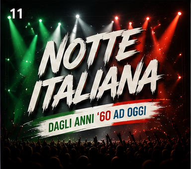
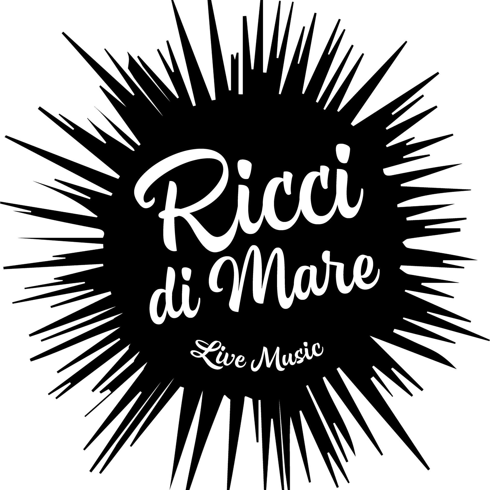

Sax ID e Liga n' Roll
Si parte con il grande ritorno di Sax ID, accompagnato dai DJ sardi Uarag e Gianni P.
A seguire saliranno sul palco i Liga n' Roll, pronti a far rivivere i piu grandi successi di Ligabue.

Il lineup ufficiale della quarta edizione, tra live, dj set e grandi ritorni sul palco.
Si parte con il grande ritorno di Sax ID, accompagnato dai DJ sardi Uarag e Gianni P.
A seguire saliranno sul palco i Liga n' Roll, pronti a far rivivere i piu grandi successi di Ligabue.
Ad aprire la serata sara il trio Paris-Buenos Aires. A seguire spazio a Unconventional Drea, artista emergente che sta riscuotendo un notevole successo.
Gran finale con Notte Italiana, il format che fara cantare e ballare il pubblico grazie alla voce e all'energia del super Ali The Voice, in un viaggio attraverso i piu grandi successi della musica italiana.


L'ultima serata vedra il ritorno sul palco di Alessandra Latino.
A seguire, un'altra novita di questa edizione: I Ricci di Mare, pronti a coinvolgere il pubblico con musica, canto e divertimento per chiudere in grande stile questa quarta edizione di Cosenza Super Street Food.

